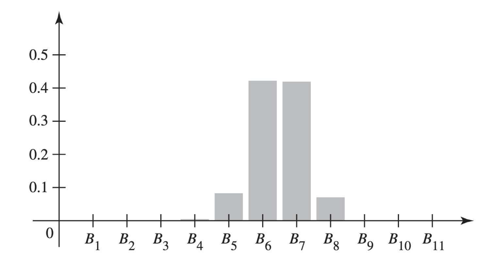
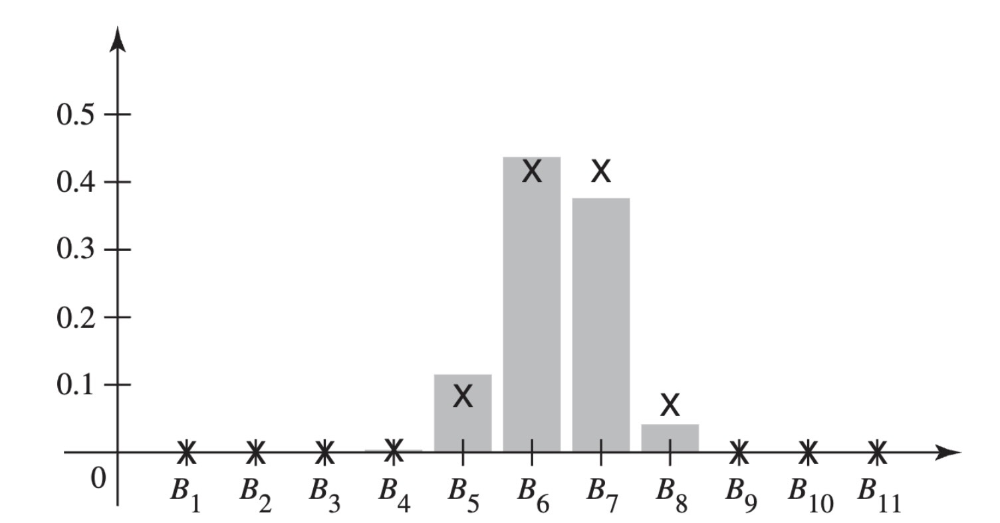

Bayes’ Theorem
Suppose that we are interested in which of several disjoint events \(B_1, \ldots, B_k\) will occur and that we will get to observe some other event \(A\). If \(\Pr(A \mid B_i)\) is available for each \(i\), then Bayes’ theorem is a useful formula for computing the conditional of the \(B_i\) events given \(A\).
We begin with a typical example.
Example 1 (Example 2.3.1: Test for a Disease) Suppose that you are walking down the street and notice that the Department of Public Health is giving a free medical test for a certain disease. The test is 90 percent reliable in the following sense: If a person has the disease, there is a probability of 0.9 that the test will give a positive response; whereas, if a person does not have the disease, there is a probability of only 0.1 that the test will give a positive response.
Data indicate that your chances of having the disease are only 1 in 10,000. However, since the test costs you nothing, and is fast and harmless, you decide to stop and take the test. A few days later you learn that you had a positive response to the test. Now, what is the probability that you have the disease?
The last question in Example 1 is a of the question for which Bayes’ theorem was designed.We have at least two disjoint events (“you have the disease” and “you do not have the disease”) about which we are uncertain, and we learn a piece of information (the result of the test) that tells us something about the uncertain events. Then we need to know how to revise the of the events in the light of the information we learned.
We now the general structure in which Bayes’ theorem operates before returning to the example.
Statement, , and Examples of Bayes’ Theorem
Example 2 (Example 2.3.2: Selecting Bolts) Consider again the situation in ?@exm-2-1-8, in which a bolt is selected at random from one of two boxes. Suppose that we cannot tell without making a further effort from which of the two boxes the one bolt is being selected. For example, the boxes may be identical in appearance or somebody else may actually select the box, but we only get to see the bolt. prior to selecting the bolt, it was equally likely that each of the two boxes would be selected. However, if we learn that event \(A\) has occurred, that is, a long bolt was selected, we can compute the conditional of the two boxes given \(A\). To remind the reader, \(B_1\) is the event that the box is selected containing 60 long bolts and 40 short bolts, while \(B_2\) is the event that the box is selected containing 10 long bolts and 20 short bolts. In ?@exm-2-1-9, we computed \(\Pr(A) = 7/15\), \(\Pr(A \mid B_1) = 3/5\), \(\Pr(A \mid B_2) = 1/3\), and \(\Pr(B_1) = \Pr(B_2) = 1/2\). So, for example,
\[ \Pr(B_1 \mid A) = \frac{\Pr(A \cap B_1)}{\Pr(A)} = \frac{\Pr(B_1)\Pr(A \mid B_1)}{\Pr(A)} = \frac{\frac{1}{2}\cdot \frac{3}{5}}{\frac{7}{15}} = \frac{9}{14}. \]
Since the first box has a higher of long bolts than the second box, it seems reasonable that the probability of \(B_1\) should rise after we learn that a long bolt was selected. It must be that \(\Pr(B_2 \mid A) = 5/14\) since one or the other box had to be selected.
In Example 2, we started with uncertainty about which of two boxes would be chosen and then we observed a long bolt drawn from the chosen box. Because the two boxes have different chances of having a long bolt drawn, the observation of a long bolt changed the of each of the two boxes having been chosen. The calculation of how the change is the purpose of Bayes’ theorem.
Theorem 1 (Theorem 2.3.1: Bayes’ Theorem) Let the events \(B_1, \ldots, B_k\) form a partition of the space \(S\) such that \(\Pr(B_j) > 0\) for \(j = 1, \ldots, k\), and let \(A\) be an event such that \(\Pr(A) > 0\). Then, for \(i = 1, \ldots, k\),
\[ \Pr(B_i \mid A) = \frac{\Pr(B_i)\Pr(A \mid B_i)}{\sum_{j=1}^k \Pr(B_j)\Pr(A \mid B_j)}. \tag{1}\]
Proof. By the definition of conditional probability,
\[ \Pr(B_i \mid A) = \frac{\Pr(B_i \cap A)}{\Pr(A)}. \]
The numerator on the right side of Equation 1 is equal to \(\Pr(B_i \cap A)\) by ?@thm-2-1-1. The denominator is equal to \(\Pr(A)\) according to ?@thm-2-1-4.
Example 3 (Example 2.3.3: Test for a Disease) Let us return to the example with which we began this section. We have just received word that we have tested positive for a disease. The test was 90 percent reliable in the sense that we described in Example 1. We want to know the probability that we have the disease after we learn that the result of the test is positive. Some readers may feel that this probability should be about 0.9. However, this feeling completely ignores the small probability of 0.0001 that you had the disease before taking the test. We shall let \(B_1\) denote the event that you have the disease, and let \(B_2\) denote the event that you do not have the disease. The events \(B_1\) and \(B_2\) form a partition. Also, let \(A\) denote the event that the response to the test is positive. The event \(A\) is information we will learn that tells us something about the partition elements. Then, by Bayes’ theorem,
\[ \begin{align*} \Pr(B_1 \mid A) &= \frac{\Pr(A \mid B_1)\Pr(B_1)}{\Pr(A \mid B_1)\Pr(B_1) + \Pr(A \mid B_2)\Pr(B_2)} \\ &= \frac{(0.9)(0.0001)}{(0.9)(0.0001) + (0.1)(0.9999)} = 0.00090. \end{align*} \]
Thus, the conditional probability that you have the disease given the test result is approximately only 1 in 1000. Of course, this conditional probability is approximately 9 times as great as the probability was before you were tested, but even the conditional probability is quite small.
Another way to explain this result is as follows: Only one person in every 10,000 actually has the disease, but the test gives a positive response for approximately one person in every 10. Hence, the number of positive responses is approximately 1000 times the number of persons who actually have the disease. In other words, out of every 1000 persons for whom the test gives a positive response, only one person actually has the disease. This example illustrates not only the use of Bayes’ theorem but also the importance of taking into account all of the information available in a .
Example 4 (Example 2.3.4: Identifying the Source of a Defective Item) Three different machines \(M_1\), \(M_2\), and \(M_3\) were used for a large batch of similar manufactured items. Suppose that 20 percent of the items were by machine \(M_1\), 30 percent by machine \(M_2\), and 50 percent by machine \(M_3\). Suppose further that 1 percent of the items by machine \(M_1\) are defective, that 2 percent of the items by machine \(M_2\) are defective, and that 3 percent of the items by machine \(M_3\) are defective. Finally, suppose that one item is selected at random from the entire batch and it is found to be defective. We shall determine the probability that this item was by machine \(M_2\).
Let \(B_i\) be the event that the selected item was by machine \(M_i\) (\(i = 1, 2, 3\)), and let \(A\) be the event that the selected item is defective. We must evaluate the conditional probability \(\Pr(B_2 \mid A)\).
The probability \(\Pr(B_i)\) that an item selected at random from the entire batch was by machine \(M_i\) is as follows, for \(i = 1, 2, 3\):
\[ \Pr(B_1) = 0.2, \; \Pr(B_2) = 0.3, \; \Pr(B_3) = 0.5. \]
Furthermore, the probability \(\Pr(A \mid B_i)\) that an item by machine \(M_i\) will be defective is
\[ \Pr(A \mid B_1) = 0.01, \; \Pr(A \mid B_2) = 0.02, \Pr(A \mid B_3) = 0.03. \]
It now follows from Bayes’ theorem that
\[ \begin{align*} \Pr(B_2 \mid A) &= \frac{\Pr(B_2)\Pr(A \mid B_2)}{\sum_{j=1}^3 \Pr(B_j)\Pr(A \mid B_j)} \\ &= \frac{(0.3)(0.02)}{(0.2)(0.01) + (0.3)(0.02) + (0.5)(0.03)} = 0.26. \end{align*} \]
Example 5 (Example 2.3.5: Identifying Genotypes) Consider a gene that has two alleles (see ?@exm-1-6-4) \(A\) and \(a\). Suppose that the gene exhibits itself through a trait (such as hair color or blood type) with two versions. We call \(A\) dominant and \(a\) recessive if individuals with genotypes \(AA\) and \(Aa\) have the same version of the trait and the individuals with genotype \(aa\) have the other version. The two versions of the trait are called phenotypes. We shall call the phenotype exhibited by individuals with genotypes \(AA\) and \(Aa\) the dominant trait, and the other trait will be called the recessive trait. In population genetics studies, it is common to have information on the phenotypes of individuals, but it is rather difficult to determine genotypes. However, some information about genotypes can be obtained by observing phenotypes of parents and children.
Assume that the allele \(A\) is dominant, that individuals mate independently of genotype, and that the genotypes \(AA\), \(Aa\), and \(aa\) occur in the population with \(1/4\), \(1/2\), and \(1/4\), respectively. We are going to observe an individual whose parents are not available, and we shall observe the phenotype of this individual. Let \(E\) be the event that the observed individual has the dominant trait. We would like to revise our opinion of the possible genotypes of the parents. There are six possible genotype combinations, \(B_1, \ldots, B_6\), for the parents prior to making any observations, and these are listed in Table 1.
The of the \(B_i\) were computed using the assumption that the parents mated independently of genotype. For example, \(B_3\) occurs if the father is \(AA\) and the mother is \(aa\) (probability \(1/16\)) or if the father is \(aa\) and the mother is \(AA\) (probability \(1/16\)). The values of \(\Pr(E \mid B_i)\) were computed assuming that the two available alleles are passed from parents to children with probability \(1/2\) each and independently for the two parents. For example, given \(B_4\), the event \(E\) occurs if and only if the child does not get two \(a\)’s. The probability of getting \(a\) from both parents given \(B_4\) is \(1/4\), so \(\Pr(E \mid B_4) = 3/4\).
Now we shall compute \(\Pr(B_1 \mid E)\) and \(\Pr(B_5 \mid E)\). We leave the other calculations to the reader. The denominator of Bayes’ theorem is the same for both calculations, namely,
\[ \begin{align*} \Pr(E) &= \sum_{i=1}^{5} \Pr(B_i)\Pr(E \mid B_i) \\ &= \frac{1}{16} \cdot 1 + \frac{1}{4} \cdot 1 + \frac{1}{8}\cdot 1 + \frac{1}{4}\cdot \frac{3}{4} + \frac{1}{4}\cdot\frac{1}{2} + \frac{1}{16}\cdot 0 = \frac{3}{4}. \end{align*} \]
Applying Bayes’ theorem, we get
\[ \Pr(B_1 \mid E) = \frac{\frac{1}{16}\cdot 1}{\frac{3}{4}} = \frac{1}{12}, \; \Pr(B_5 \mid E) = \frac{\frac{1}{4}\cdot \frac{1}{2}}{\frac{3}{4}} = \frac{1}{6}. \]
| \((AA, AA)\) | \((AA, Aa)\) | \((AA,aa)\) | \((Aa, Aa)\) | \((Aa, aa)\) | \((aa, aa)\) | |
|---|---|---|---|---|---|---|
| Name of event | \(B_1\) | \(B_2\) | \(B_3\) | \(B_4\) | \(B_5\) | \(B_6\) |
| probability of \(B_i\) | \(1/16\) | \(1/4\) | \(1/8\) | \(1/4\) | \(1/4\) | \(1/16\) |
| \(\Pr(E \mid B_i)\) | 1 | 1 | 1 | \(3/4\) | \(1/2\) | 0 |
Note: Conditional Version of Bayes’ Theorem. There is also a version of Bayes’ theorem conditional on an event \(C\):
\[ \Pr(B_i \mid A \cap C) = \frac{\Pr(B_i \mid C)\Pr(A \mid B_i \cap C)}{\sum_{j=1}^k \Pr(B_j \mid C)\Pr(A \mid B_j \cap C)}. \tag{2}\]
Prior and Posterior
In Example 4, a probability like \(\Pr(B_2)\) is often called the prior probability that the selected item will have been by machine \(M_2\), because \(\Pr(B_2)\) is the probability of this event before the item is selected and before it is known whether the selected item is defective or nondefective. A probability like \(\Pr(B_2 \mid A)\) is then called the posterior probability that the selected item was by machine \(M_2\), because it is the probability of this event after it is known that the selected item is defective.
Thus, in Example 4, the prior probability that the selected item will have been by machine \(M_2\) is 0.3. After an item has been selected and has been found to be defective, the posterior probability that the item was by machine \(M_2\) is 0.26. Since this posterior probability is smaller than the prior probability that the item was by machine \(M_2\), the posterior probability that the item was by one of the other machines must be larger than the prior probability that it was by one of those machines (see Exercises 1 and 2 at the end of this section).
Computation of Posterior in More Than One Stage
Suppose that a box contains one fair coin and one coin with a head on each side. Suppose also that one coin is selected at random and that when it is tossed, a head is obtained. We shall determine the probability that the coin is the fair coin.
Let \(B_1\) be the event that the coin is fair, let \(B_2\) be the event that the coin has two heads, and let \(H_1\) be the event that a head is obtained when the coin is tossed. Then, by Bayes’ theorem,
\[ \begin{align*} \Pr(B_1 \mid H_1) &= \frac{\Pr(B_1)\Pr(H_1 \mid B_1)}{\Pr(B_1)\Pr(H_1 \mid B_1) + \Pr(B_2)\Pr(H_1 \mid B_2)} \\ &= \frac{(1/2)(1/2)}{(1/2)(1/2) + (1/2)(1)} = \frac{1}{3}. \end{align*} \tag{3}\]
Thus, after the first toss, the posterior probability that the coin is fair is \(1/3\).
Now suppose that the same coin is tossed again and we assume that the two tosses are conditionally independent given both \(B_1\) and \(B_2\). Suppose that another head is obtained. There are two ways of determining the new value of the posterior probability that the coin is fair.
The first way is to return to the beginning of the experiment and assume again that the prior are \(\Pr(B_1) = \Pr(B_2) = 1/2\). We shall let \(H_1 \cap H_2\) denote the event in which heads are obtained on two tosses of the coin, and we shall calculate the posterior probability \(\Pr(B_1 \mid H_1 \cap H_2)\) that the coin is fair after we have observed the event \(H_1 \cap H_2\). The assumption that the tosses are conditionally independent given \(B_1\) means that \(\Pr(H_1 \cap H_2 \mid B_1) = 1/2 \cdot 1/2 = 1/4\). By Bayes’ theorem,
\[ \begin{align*} \Pr(B_1 \mid H_1 \cap H_2) &= \frac{\Pr(B_1)\Pr(H_1 \cap H_2 \mid B_1)}{\Pr(B_1)\Pr(H_1 \cap H_2 \mid B_1) + \Pr(B_2)\Pr(H_1 \cap H_2 \mid B_2)} \\ &= \frac{(1/2)(1/4)}{(1/2)(1/4) + (1/2)(1)} = \frac{1}{5}. \end{align*} \tag{4}\]
The second way of determining this same posterior probability is to use the conditional version of Bayes’ theorem (?@thm-2-3-2) given the event \(H_1\). Given \(H_1\), the conditional probability of \(B_1\) is \(1/3\), and the conditional probability of \(B_2\) is therefore \(2/3\). These conditional can now serve as the prior for the next stage of the experiment, in which the coin is tossed a second time. Thus, we can apply Equation 2 with \(C = H_1\), \(\Pr(B_1 \mid H_1) = 1/3\), and \(\Pr(B_2 \mid H_1) = 2/3\). We can then compute the posterior probability \(\Pr(B_1 \mid H_1 \cap H_2)\) that the coin is fair after we have observed a head on the second toss and a head on the first toss. We shall need \(\Pr(H_2 \mid B_1 \cap H_1)\), which equals \(\Pr(H_2 \mid B_1) = 1/2\) by ?@thm-2-2-4 since \(H_1\) and \(H_2\) are conditionally independent given \(B_1\). Since the coin is two-headed when \(B_2\) occurs, \(\Pr(H_2 \mid B_2 \cap H_1) = 1\). So we obtain
\[ \begin{align*} \Pr(B_1 \mid H_1 \cap H_2) &= \frac{ \Pr(B_1 \mid H_1) \Pr(H_2 \mid B_1 \cap H_1) }{ \Pr(B_1 \mid H_1) \Pr(H_2 \mid B_1 \cap H_1) + \Pr(B_2 \mid H_1) \Pr(H_2 \mid B_2 \cap H_1) } \\ &= \frac{(1/3)(1/2)}{(1/3)(1/2) + (2/3)(1)} = \frac{1}{5} \end{align*} \tag{5}\]
The posterior probability of the event \(B_1\) obtained in the second way is the same as that obtained in the first way. We can make the following general statement: If an experiment is carried out in more than one stage, then the posterior probability of every event can also be calculated in more than one stage. After each stage has been carried out, the posterior probability calculated for the event after that stage serves as the prior probability for the next stage. The reader should look back at Equation 2 to see that this interpretation is precisely what the conditional version of Bayes’ theorem says. The example we have been doing with coin tossing is typical of many applications of Bayes’ theorem and its conditional version because we are assuming that the observable events are conditionally independent given each element of the partition \(B_1, \ldots, B_k\) (in this case, \(k = 2\)). The conditional independence makes the probability of \(H_i\) (head on \(i\)th toss) given \(B_1\) (or given \(B_2\)) the same whether or not we also condition on earlier tosses (see ?@thm-2-2-4).
Conditionally Independent Events
The calculations that led to Equation 3 and Equation 5 together with ?@exm-2-2-10 illustrate simple cases of a very powerful statistical model for observable events. It is very common to encounter a sequence of events that we believe are similar in that they all have the same probability of occurring. It is also common that the order in which the events are labeled does not affect the probabilities that we assign. However, we often believe that these events are not independent, because, if we were to observe some of them, we would change our minds about the probability of the ones we had not observed depending on how many of the observed events occur. For example, in the coin-tossing calculation leading up to Equation 3, before any tosses occur, the probability of \(H_2\) is the same as the probability of \(H_1\), namely, the denominator of Equation 3, \(3/4\), as ?@thm-2-1-4 says. However, after observing that the event \(H_1\) occurs, the probability of \(H_2\) is \(\Pr(H_2 \mid H_1)\), which is the denominator of Equation 5, \(5/6\), as computed by the conditional version of the law of total probability ?@eq-2-1-5. Even though we might treat the coin tosses as independent conditional on the coin being fair, and we might treat them as independent conditional on the coin being two-headed (in which case we know what will happen every time anyway), we cannot treat them as independent without the conditioning information. The conditioning information removes an important source of uncertainty from the problem, so we partition the sample space accordingly. Now we can use the conditional independence of the tosses to calculate joint probabilities of various combinations of events conditionally on the partition events. Finally, we can combine these probabilities using ?@thm-2-1-4 and ?@eq-2-1-5. Two more examples will help to illustrate these ideas.
Example 6 (Example 2.3.6: Learning about a Proportion) In ?@exm-2-2-10, a machine produced defective parts in one of two proportions, \(p = 0.01\) or \(p = 0.4\). Suppose that the prior probability that \(p = 0.01\) is \(0.9\). After sampling six parts at random, suppose that we observe two defectives. What is the posterior probability that \(p = 0.01\)?
Let \(B_1 = \{p = 0.01\}\) and \(B_2 = \{p = 0.4\}\) as in ?@exm-2-2-10. Let \(A\) be the event that two defectives occur in a random sample of size six. The prior probability of \(B_1\) is \(0.9\), and the prior probability of \(B_2\) is \(0.1\). We already computed \(\Pr(A \mid B_1) = 1.44 \times 10^{−3}\) and \(\Pr(A \mid B_2) = 0.311\) in ?@exm-2-2-10. Bayes’ theorem tells us that
\[ \Pr(B_1 \mid A) = \frac{ 0.9 \times 1.44 \times 10^{-3} }{ 0.9 \times 1.44 \times 10^{-3} + 0.1 \times 0.311 } = 0.04. \]
Even though we thought originally that \(B_1\) had probability as high as \(0.9\), after we learned that there were two defective items in a sample as small as six, we changed our minds dramatically and now we believe that \(B_1\) has probability as small as \(0.04\). The reason for this major change is that the event \(A\) that occurred has much higher probability if \(B_2\) is true than if \(B_1\) is true.
Example 7 (Example 2.3.7: A Clinical Trial) Consider the same clinical trial described in Examples ?@exm-2-1-12 and ?@exm-2-1-13. Let \(E_i\) be the event that the \(i\)th patient has success as her outcome. Recall that \(B_j\) is the event that \(p = (j − 1)/10\) for \(j = 1, \ldots, 11\), where \(p\) is the proportion of successes among all possible patients. If we knew which \(B_j\) occurred, we would say that \(E_1, E_2, \ldots\) were independent. That is, we are willing to model the patients as conditionally independent given each event \(B_j\), and we set \(\Pr(E_i \mid B_j) = (j − 1)/10\) for all \(i\), \(j\). We shall still assume that \(\Pr(B_j) = 1/11\) for all \(j\) prior to the start of the trial. We are now in position to express what we learn about \(p\) by computing posterior probabilities for the \(B_j\) events after each patient finishes the trial.
For example, consider the first patient. We calculated \(\Pr(E_1) = 1/2\) in ?@eq-2-1-6. If \(E_1\) occurs, we apply Bayes’ theorem to get
\[ \Pr(B_j \mid E_1) = \frac{\Pr(E_1 \mid B_j)\Pr(B_j)}{1/2} = \frac{2(j-1)}{10 \cdot 11} = \frac{j-1}{55}. \tag{6}\]
After observing one success, the posterior probabilities of large values of \(p\) are higher than their prior probabilities and the posterior probabilities of low values of \(p\) are lower than their prior probabilities as we would expect. For example, \(\Pr(B_1 \mid E_1) = 0\), because \(p = 0\) is ruled out after one success. Also, \(\Pr(B_2 \mid E_1) = 0.0182\), which is much smaller than its prior value \(0.0909\), and \(\Pr(B_{11} \mid E_1) = 0.1818\), which is larger than its prior value \(0.0909\).
We could check how the posterior probabilities behave after each patient is observed. However, we shall skip ahead to the point at which all 40 patients in the imipramine column of ?@tbl-2-1 have been observed. Let \(A\) stand for the observed event that 22 of them are successes and 18 are failures. We can use the same reasoning as in ?@exm-2-2-5 to compute \(\Pr(A \mid B_j)\). There are \(\binom{40}{22}\) possible sequences of 40 patients with 22 successes, and, conditional on \(B_j\), the probability of each sequence is $([j − 1]/10)^{22}(1 − [j − 1]/10)^{18}.
So,
\[ \Pr(A \mid B_j) = \binom{40}{22}([j-1]/10)^{22}(1 - [j-1]/10)^{18}, \tag{7}\]
for each \(j\). Then Bayes’ theorem tells us that
\[ \Pr(B_j \mid A) = \frac{ \frac{1}{11}\binom{40}{22}([j-1]/10)^{22}(1 - [j-1]/10)^{18} }{ \sum_{i=1}^{11}\frac{1}{11}\binom{40}{22}([i-1]/10)^{22}(1 - [i-1]/10)^{18} }. \]
?@fig-2-3 shows the posterior probabilities of the 11 partition elements after observing \(A\). Notice that the probabilities of \(B_6\) and \(B_7\) are the highest, \(0.42\). This corresponds to the fact that the proportion of successes in the observed sample is \(22/40 = 0.55\), halfway between \((6 − 1)/10\) and \((7 − 1)/10\).
We can also compute the probability that the next patient will be a success both before the trial and after the 40 patients. Before the trial, \(\Pr(E_{41}) = \Pr(E_1)\), which equals \(1/2\), as computed in ?@eq-2-1-6. After observing the 40 patients, we can compute \(\Pr(E_{41} \mid A)\) using the conditional version of the law of total probability, ?@eq-2-1-5:
\[ \Pr(E_{41} \mid A) = \sum_{j=1}^{11}\Pr(E_{41} \mid B_j \cap A)\Pr(B_j \mid A). \tag{8}\]
Using the values of \(\Pr(B_j \mid A)\) in ?@fig-2-3 and the fact that \(\Pr(E_{41} \mid B_j \cap A) = \Pr(E_{41} \mid B_j) = (j − 1)/10\) (conditional independence of the \(E_i\) given the \(B_j\)), we compute Equation 8 to be \(0.5476\). This is also very close to the observed frequency of success.
The calculation at the end of Example 7 is typical of what happens after observing many conditionally independent events with the same conditional probability of occurrence. The conditional probability of the next event given those that were observed tends to be close to the observed frequency of occurrence among the observed events. Indeed, when there is substantial data, the choice of prior probabilities becomes far less important.


Example 8 (Example 2.3.8: The Effect of Prior Probabilities) Consider the same clinical trial as in Example 7. This time, suppose that a different researcher has a different prior opinion about the value of \(p\), the probability of success. This researcher believes the following prior probabilities:
| Event | \(B_1\) | \(B_2\) | \(B_3\) | \(B_4\) | \(B_5\) | \(B_6\) | \(B_7\) | \(B_8\) | \(B_9\) | \(B_{10}\) | \(B_{11}\) |
|---|---|---|---|---|---|---|---|---|---|---|---|
| \(p\) | 0.0 | 0.1 | 0.2 | 0.3 | 0.4 | 0.5 | 0.6 | 0.7 | 0.8 | 0.9 | 1.0 |
| Prior prob. | 0.00 | 0.19 | 0.19 | 0.17 | 0.14 | 0.11 | 0.09 | 0.06 | 0.04 | 0.01 | 0.00 |
We can recalculate the posterior probabilities using Bayes’ theorem, and we get the values pictured in ?@fig-2-4. To aid comparison, the posterior probabilities from Example 7 are also plotted in ?@fig-2-4 using the symbol X. One can see how close the two sets of posterior probabilities are despite the large differences between the prior probabilities. If there had been fewer patients observed, there would have been larger differences between the two sets of posterior probabilites because the observed events would have provided less information. (See Exercise 12 in this section.)
Summary
Bayes’ theorem tells us how to compute the conditional probability of each event in a partition given an observed event \(A\). A major use of partitions is to divide the sample space into small enough pieces so that a collection of events of interest become conditionally independent given each event in the partition.
Exercises
Exercise 1 (Exercise 2.3.1) Suppose that \(k\) events \(B_1, \ldots, B_k\) form a partition of the sample space \(S\). For \(i = 1, \ldots, k\), let \(\Pr(B_i)\) denote the prior probability of \(B_i\). Also, for each event \(A\) such that \(\Pr(A) > 0\), let \(\Pr(B_i \mid A)\) denote the posterior probability of \(B_i\) given that the event \(A\) has occurred. Prove that if \(\Pr(B_1 \mid A) < \Pr(B_1)\), then \(\Pr(B_i \mid A) > \Pr(B_i)\) for at least one value of \(i\) (\(i = 2, \ldots, k\)).
Exercise 2 (Exercise 2.3.2) Consider again the conditions of Example 4 in this section, in which an item was selected at random from a batch of manufactured items and was found to be defective. For which values of \(i\) (\(i = 1, 2, 3\)) is the posterior probability that the item was produced by machine \(M_i\) larger than the prior probability that the item was produced by machine \(M_i\)?
Exercise 3 (Exercise 2.3.3) Suppose that in Example 4 in this section, the item selected at random from the entire lot is found to be nondefective. Determine the posterior probability that it was produced by machine \(M_2\).
Exercise 4 (Exercise 2.3.4) A new test has been devised for detecting a particular type of cancer. If the test is applied to a person who has this type of cancer, the probability that the person will have a positive reaction is 0.95 and the probability that the person will have a negative reaction is 0.05. If the test is applied to a person who does not have this type of cancer, the probability that the person will have a positive reaction is 0.05 and the probability that the person will have a negative reaction is 0.95. Suppose that in the general population, one person out of every 100,000 people has this type of cancer. If a person selected at random has a positive reaction to the test, what is the probability that he has this type of cancer?
Exercise 5 (Exercise 2.3.5) In a certain city, 30 percent of the people are Conservatives, 50 percent are Liberals, and 20 percent are Independents. Records show that in a particular election, 65 percent of the Conservatives voted, 82 percent of the Liberals voted, and 50 percent of the Independents voted. If a person in the city is selected at random and it is learned that she did not vote in the last election, what is the probability that she is a Liberal?
Exercise 6 (Exercise 2.3.6) Suppose that when a machine is adjusted properly, 50 percent of the items produced by it are of high quality and the other 50 percent are of medium quality. Suppose, however, that the machine is improperly adjusted during 10 percent of the time and that, under these conditions, 25 percent of the items produced by it are of high quality and 75 percent are of medium quality.
- Suppose that five items produced by the machine at a certain time are selected at random and inspected. If four of these items are of high quality and one item is of medium quality, what is the probability that the machine was adjusted properly at that time?
- Suppose that one additional item, which was produced by the machine at the same time as the other five items, is selected and found to be of medium quality. What is the new posterior probability that the machine was adjusted properly?
Exercise 7 (Exercise 2.3.7) Suppose that a box contains five coins and that for each coin there is a different probability that a head will be obtained when the coin is tossed. Let \(p_i\) denote the probability of a head when the \(i\)th coin is tossed (\(i = 1, \ldots, 5\)), and suppose that \(p_1 = 0\), \(p_2 = 1/4\), \(p_3 = 1/2\), \(p_4 = 3/4\), and \(p_5 = 1\).
- Suppose that one coin is selected at random from the box and when it is tossed once, a head is obtained. What is the posterior probability that the \(i\)th coin was selected (\(i = 1, \ldots, 5\))?
- If the same coin were tossed again, what would be the probability of obtaining another head?
- If a tail had been obtained on the first toss of the selected coin and the same coin were tossed again, what would be the probability of obtaining a head on the second toss?
Exercise 8 (Exercise 2.3.8) Consider again the box containing the five different coins described in Exercise 7. Suppose that one coin is selected at random from the box and is tossed repeatedly until a head is obtained. a. If the first head is obtained on the fourth toss, what is the posterior probability that the \(i\)th coin was selected (\(i = 1, \ldots, 5\))? b. If we continue to toss the same coin until another head is obtained, what is the probability that exactly three additional tosses will be required?
Exercise 9 (Exercise 2.3.9) Consider again the conditions of ?@exr-2-1-14 in ?@sec-2-1. Suppose that several parts will be observed and that the different parts are conditionally independent given each of the three states of repair of the machine. If seven parts are observed and exactly one is defective, compute the posterior probabilities of the three states of repair.
Exercise 10 (Exercise 2.3.10) Consider again the conditions of Example 5, in which the phenotype of an individual was observed and found to be the dominant trait. For which values of \(i\) (\(i = 1, \ldots, 6\)) is the posterior probability that the parents have the genotypes of event \(B_i\) smaller than the prior probability that the parents have the genotyes of event \(B_i\)?
Exercise 11 (Exercise 2.3.11) Suppose that in Example 5 the observed individual has the recessive trait. Determine the posterior probability that the parents have the genotypes of event \(B_4\).
Exercise 12 (Exercise 2.3.12) In the clinical trial in Examples 7 and 8, suppose that we have only observed the first five patients and three of the five had been successes. Use the two different sets of prior probabilities from Examples 7 and 8 to calculate two sets of posterior probabilities. Are these two sets of posterior probabilities as close to each other as were the two in Examples 7 and 8? Why or why not?
Exercise 13 (Exercise 2.3.13) Suppose that a box contains one fair coin and one coin with a head on each side. Suppose that a coin is drawn at random from this box and that we begin to flip the coin. In Equation 4 and Equation 5, we computed the conditional probability that the coin was fair given that the first two flips both produce heads.
- Suppose that the coin is flipped a third time and another head is obtained. Compute the probability that the coin is fair given that all three flips produced heads.
- Suppose that the coin is flipped a fourth time and the result is tails. Compute the posterior probability that the coin is fair.
Exercise 14 (Exercise 2.3.14) Consider again the conditions of ?@exr-2-2-23 in ?@sec-2-2. Assume that \(\Pr(B) = 0.4\). Let \(A\) be the event that exactly 8 out of 11 programs compiled. Compute the conditional probability of \(B\) given \(A\).
Exercise 15 (Exercise 2.3.15) Use the prior probabilities in Example 8 for the events \(B_1, \ldots, B_{11}\). Let \(E_1\) be the event that the first patient is a success. Compute the probability of \(E_1\) and explain why it is so much less than the value computed in Example 7.
Exercise 16 (Exercise 2.3.16) Consider a machine that produces items in sequence. Under normal operating conditions, the items are independent with probability 0.01 of being defective. However, it is possible for the machine to develop a “memory” in the following sense: After each defective item, and independent of anything that happened earlier, the probability that the next item is defective is \(2/5\). After each nondefective item, and independent of anything that happened earlier, the probability that the next item is defective is \(1/165\).
Assume that the machine is either operating normally for the whole time we observe or has a memory for the whole time that we observe. Let \(B\) be the event that the machine is operating normally, and assume that \(\Pr(B) = 2/3\). Let \(D_i\) be the event that the \(i\)th item inspected is defective. Assume that \(D_1\) is independent of \(B\).
- Prove that \(\Pr(D_i) = 0.01\) for all \(i\). Hint: Use induction.
- Assume that we observe the first six items and the event that occurs is \(E = D_1^c \cap D_2^c \cap D_3 \cap D_4 \cap D_5^c \cap D_6^c\). That is, the third and fourth items are defective, but the other four are not. Compute \(\Pr(B \mid D)\).